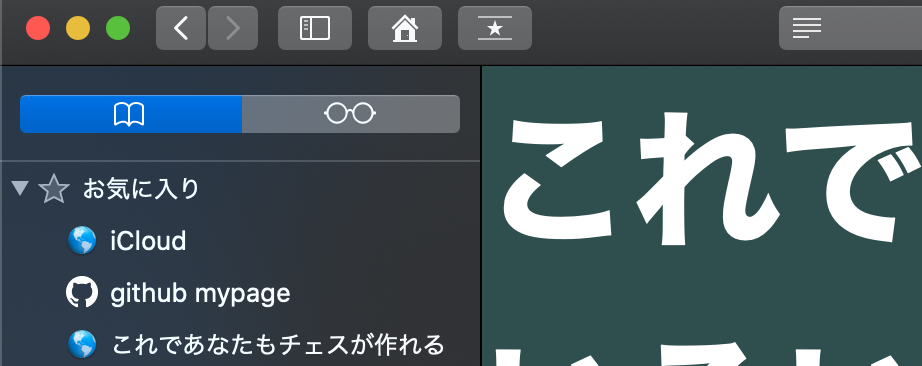
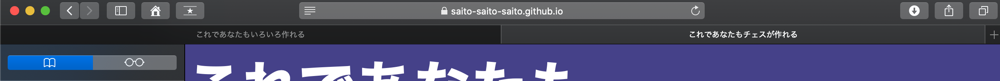

Stage 2 文章のレイアウトを考える
今回いじるのは「これであなたもサイトが作れる」のトップページ(Stage 0&1)と Stage 2 の 2 つの HTML ファイルです。お手元にご用意していただき、この解説と一緒にご覧ください。
目次
2-1 head のコーディング
HTML ファイルで最初に書く head の部分、これは大体テンプレになっていますので、私のコードを常にマルパクリするくらいの気概で結構です。テキストエディタによっては "doc" と入力して tab キーを押すだけでテンプレを書き上げてくれたりします。ただし title タグだけはしっかり考えましょう。title の中身はこういうところに現れるんでしたね。
 